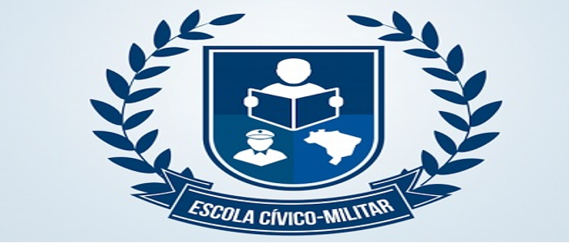

Projeto Político Pedagógico (PPP)
Estou na ECIM (Escola Cívico Militar) de Taubaté desde abril de 2022, como oficial de gestão escolar. Trago minha experiência de mais de 30 anos na gestão de pessoal, gerenciando efetivos de até 350 militares. Ao passar para reserva fui contratado para ser o assessor cultural da 12 Brigada Infantaria Leve Aeromóvel, onde gerenciei seis espaços culturais, da mesma maneira acompanhei a implementação dos planos de gestão dos espaços culturais. Ao iniciar minhas atividades na ECIM, econtrei o PPP pronto e em ação. Tomei conhecimento dele e direcionei meus esforços para o atingimento dos objetivos do PPP. Fruto da vivencia do ano passado,estamos reavaliando para apresentar as sugestões de possíveis melhorias a serem apresentadas a comunidade escolar sob a orientação da direção escolar, se for o caso.
Projeto Valores
O MEC distribui por meio de sua Diretoria das Escolas Cívico MIlitares (DECIM) uma cartilha de diretrizes onde consta as ações que os militares da reserva devem atuar na escola,basicamente,como processo de apoio as atividades dos discentes. Um dos pontos dessa cartilha é o projeto valores que compõe a PPP, que visa a contribuir na formação da cidadania plena por parte dos docentes,tendo como valores diretivos: civismo, dedicação, excelência, honestidade e respeito.
Similitudes
O PPP é uma ferramenta de gestão,não só escolar,utilizado de maneira genérica em empresas sejam públicas ou privadas nesses casos nomeado como planejamento estratégico (PE). Ele toma outros nomes seja no meio militar como PEO,no campo museal como planejamento museológico ou em específicio plano de gestão do espaço cultural. De maneira geral, está é nossa experiência com o conceito planejamento estratégico, em especial o PPP.
